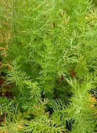
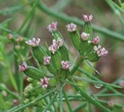
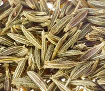

HORT 282 :: Lecture 06 :: CUMIN

CUMIN
(Cuminum cyminum, Apiaceae)
 Cumin, commonly known as Jeera, (Cuminum cyminum) belongs to Apiaceae family, widely cultivated in Gujarat, Rajasthan and in some parts of Madhya Pradesh and Uttar Pradesh as Rabi crop. Cumin is mainly used in flavouring foods. It is also used in Ayurvedic medicines.
Climate and soil
Cumin is a tropical plant. It grows well in sub-tropical climate too. High humidity during flowering & fruit set, causes fungal diseases in this crop. Cumin can be cultivated in all types of soils but well drained sandy loam and medium soils are suitable for the crop.
Varieties
Improved varieties like S-404, MC-43, Gujarat Cumin-1(GC-1), GC-2, GC-3, RS-1, UC-198, RZ-19, etc., evolved by Agricultural Universities of Gujarat and Rajasthan having higher yield potential are useful for cultivation. The maturity days are 110 to 115 days depending on variety.
Botany
It is an herbaceous annual plant, with a slender branched stem 20–30 cm tall. The leaves are 5–10 cm long, pinnate or bipinnate, thread-like leaflets. The flowers are small, white or pink, and borne in umbels. The fruit is a lateral fusiform or ovoid achene 4–5 mm long, containing a single seed. Cumin seeds are similar to fennel and anise seeds in appearance, but are smaller and darker in color.
 |
 |
Sowing and Seed rate
Sowing is done from 1st week of November to 1st week of December by broadcasting or in rows drilled at 30 cm. Seed rate vary from 12 to 15 kg / ha, depending upon method of sowing & type of soil. Sowing of seeds should be done at a depth of 1 – 2 cm after treatment with Ceresan or thiram or Difoltan @ 3.0 g per kg. Soaking of seeds for 8 hours before sowing is helpful in getting good germination. Soaked seeds should be dried in shade to facilitate broadcasting. Sowing at higher depths, affect the germination of seeds adversely. Crop rotation should be followed to avoid incidence of pest and diseases.
Land preparation
Soil is brought to fine tilth by 2-3 ploughings with harrow or deshi plough. Stubbles of previous crops should be collected and removed from the field. Clods should be broken and field should be leveled with the help of plank. Beds of 4 m x 3 m size with provision of irrigation channels should be prepared before sowing of seeds to facilitate proper irrigation and intercultural operations.
Manures & Fertilizers
15 – 20 MT FYM, 30 kg Nitrogen & 15 kg Phosphorus per ha is recommended for cumin crop. Whole quantity of FYM should be mixed into the soil at the time of land preparation and 15 kg Nitrogen & whole quantity of Phosphorus should be applied as basal dose. Another, 15 kg Nitrogen should be applied as topdressing one month after germination of seeds.
Weeding
The crop should be kept free from weeds for proper growth and development of plants. Generally 2-3 hand weeding are required to keep the weeds under check. In drilled crop light intercultural operation is beneficial. 1st weeding and hoeing should be done after 30-40 days from the date of sowing.
Irrigation
Based on type of soil, crop requires 4-6 irrigation. 1st light irrigation should be given immediately after sowing and second irrigation should be given after 6-10 days from 1st irrigation. Subsequent irrigations should be given after 30, 45, 65 and 80 days from 1st irrigation. Irrigation at the time of flowering and fruit set are essential. At maturity stage irrigation should be stopped.
Plant Protection
Aphid
Aphid is a major pest of cumin crop, it sucks the sap of tender parts and reduces the yield. Spraying of 0.03% solution of Dimethoate or 0.025% solution of Methyl demeton or 0.04% solution of Monocrotophos is recommended to control the aphid.
Leaf eating Caterpillar
This pest causes damage to the foliage of plants reducing yield of the crop. It can be controlled by spraying of 0.02% solution of Phosphomidon in the early stage of crop.
b) Diseases
Fusarium wilt
Infected plants show peculiar symptoms of dropping of tips and leaves, leading to mortality of the entire plant. Attack of wilt is severe in younger plants. There is no chemical control for this disease. Crop rotation and use of Neem cake are helpful in checking spread of the fungus vis-à-vis disease. Seeds collected from disease free plots should only be used for sowing.
Alternaria Blight
The blight affected plants show very minute brownish necrotic spots, which later turn to blackish. Mostly diseased plants fail to produce seeds. If seeds are produced they remain shriveled, light in weight and dark in colour. For the control of this disease seed treatment and spraying of 0.2% solution of Dithane-M-45 4 times at 10 days interval commencing from 40 days after sowing is recommended. Add 1 ml soap solution / liter water for better efficiency of fungicide. The crop should be kept free from weeds. Crops requiring more irrigation and mustard crop should not be grown in vicinity of this crop.
Powdery mildew
Affected plants in early stages show minute whitish spots on leaves, petiole, stem pedicel and seeds. In severe condition, it looks as the plants have been dusted with white powder. At later stages of attack seeds become white and shriveled and light in weight. Crop should be dusted with 300 mesh Sulphur dust @ 25 kg/ha to control this disease as soon as the symptoms are noticed. Spraying of wettable Sulphur or Dinocap (Karathane or Thiowet) can also be used to control the disease @ 20-25 g per 10 liter of water at the initial stage of this disease. If needed second spray should be given 15-20 day after first spray.
Harvesting
Generally cumin crop takes about 110-115 days to reach maturity. Crop becomes ready to harvest, when plants turn yellowish brown. Harvesting should be done early in the morning by cutting/uprooting the whole plants. Harvested crop should be dried in the threshing yard thrashed to separate the seeds. Seeds should be cleaned by winnowing.
Yield: 600 to 700 kg/h
*********
- Cumin is widely cultivated in ____________ and ________________
- Improved varieties of cumin is ____________
- Mention the seed rate for cumin _________________
- Yield of cumin ranges from ___________
- Important disease in cumin _______________
| Download this lecture as PDF here |